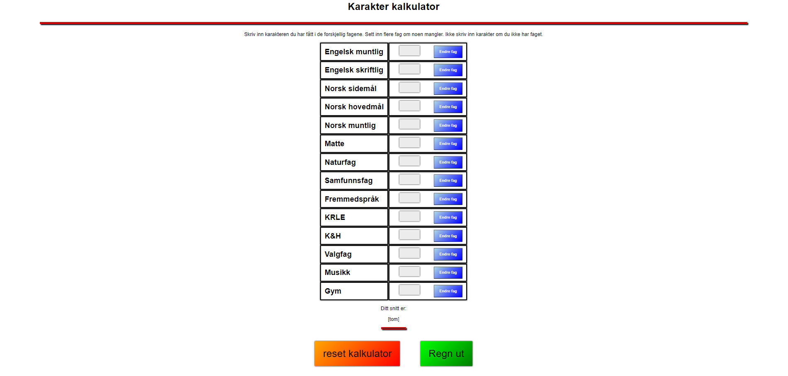

Min portefølje
her kan du se andre prosjekter eller ting jeg har laget.
Nettsider
Oslo Lacrosse
På skolen fikk vi i oppdrag å lage en nettside til en Lacrosse lag som heter Oslo Lacrosse. Vi fikk en uke å lage nettsiden ved hjelp av en designmanual og forklart hva de forskjellige sidene skulle inneholde. Jeg rakk ikke å gjøre ferdig siden, bare 3 av 5 sider ble ferdig ish. Dette er fordi det oppsto et problem som jeg brukte 2 av 5 dager på å fikse. Jeg rakk heller ikke å gjøre nettsiden responsiv slik at man kan bruke den på flere skjermen med varierende størrelser.
NB! Nettsiden ble aldri ferdig. Det kan være problemer med skalering så derfor anbefales det å åpne nettsiden på en 1440p skjerm. Det vil også være noen knapper som ikke funker. (Knappen er deaktivert for mobilversjonen
Karater Kalkulator
Oppdrag 3 på skolen var å lage en kalkulator du kan bruke for å regne ut karaktersnittet ditt. Kriteriene var at både en 10. Klassing som begynner på VG1 kan bruke den OG en VG1 som begynner på VG2 kan bruke den. Med andre ord betyr det at det må være en måte man kan egge til og fjerne fag, noe som kalkulatoren min kan (på en måte). Om du ikke fyller inn ett tall i et av fagene vil ikke kalkulatoren regne den med i snittet ditt. Du kan også endre navn på fagene i tilfelle du har yrkesfag eller andre fag enn de som står der. Dette var det første oppdraget hvor vi skulle bruke Javascript.
 Prøv ut kalkulatorenAbra Havn
På skolen fikk vi i oppdrag å lage en nettside hvor man kunne booke rom hos Abra Havn. Nettsiden min inneholder innlogging og registrer bruker funksjon, samt et halvferdig booking system som jeg ikke rakk å bli helt ferdig med fordi vi fikk 2 uker på å lage nettsiden, men jeg fikk influensa den andre uka. Jeg rakk da ikke å lage en side for admins for nettsiden hvor de ville få oversikt over alle brukere som ble registrert og alle bestillinger. Jeg lagde da i stedet for en print funksjon som printer ut en kvittering for alt du har bestilt.
NB! Jeg rakk ikke å gjøre nettsiden responsiv for mobil, derfor er knappen deaktivert for mobilversjonen
Videoer
Skoleprosjekter
Dette er informative videoer som jeg har redigert og vært med på å lage.
Andre videoer
Dette er andre videoer som jeg enten har laget helt selv eller bare redigert.
Logoer
Kvadrat Kapital AS
Et av oppdragene vi har fått på skolen var logodesign. Da lagde jeg en logo for et fiktivt
selskap som heter "Kvadrat Kapital AS". Jeg lagde en farget logo og en monochrome logo.
blå og grønnfargen representer en positiv endring, en positiv økning. Fire ruter oppå
hverandre med farge som starter på blått og lager en overgang til grønn på den øverste
symboliserer som sagt en økning, at den øverste kvadraten er en ny kvadrat som er der for å
belønne kunden. Jeg tenkte at dette elementet virket relevant til firmaet med tanke på at
det er et firma som skal hjelpe deg med å ta gode økonomiske handlinger
Min egen logo / MHA logo
Dette er min egen logo. Det er initialene mine. MHA = Mikkel Huth Andersen. I den øverste logoen er M-en hele greia. H-en er den rød og oransje delen til høyre og A-en er gule delen til venstre.Jeg den logoen med mange forskjellige fargevarianter, et av dem er den du ser øverst til venstre over hele nettsiden. Logoen under er lettere å se at jeg satt sammen H og A til høyre for M-en. Ikke like "avansert" men resultatet ble fortsatt ikke så ille.